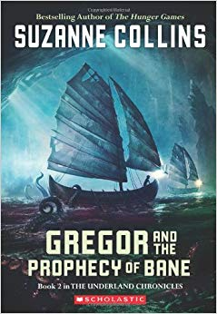
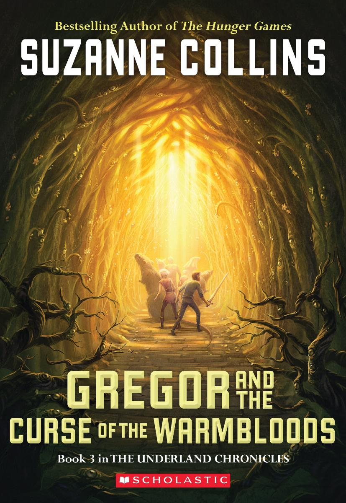
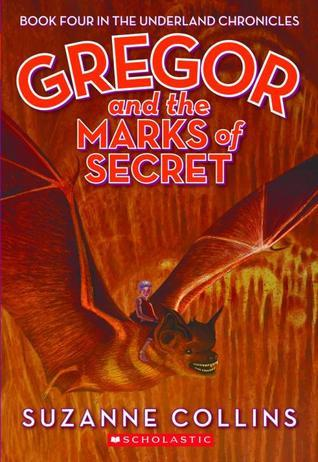
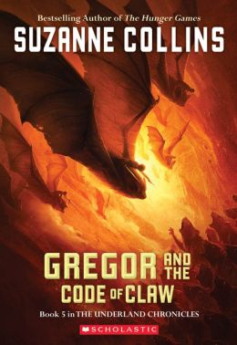
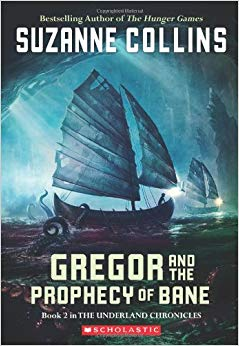
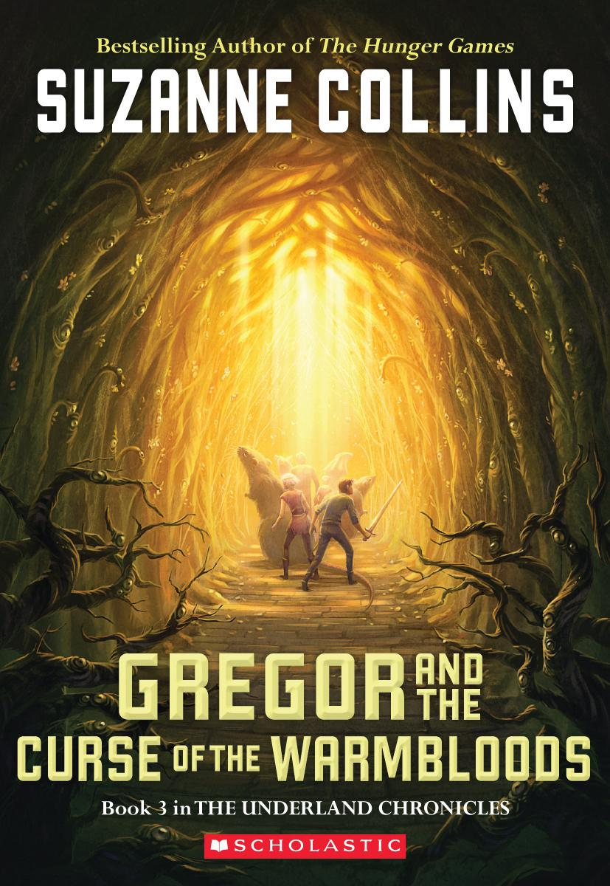
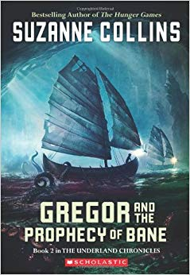
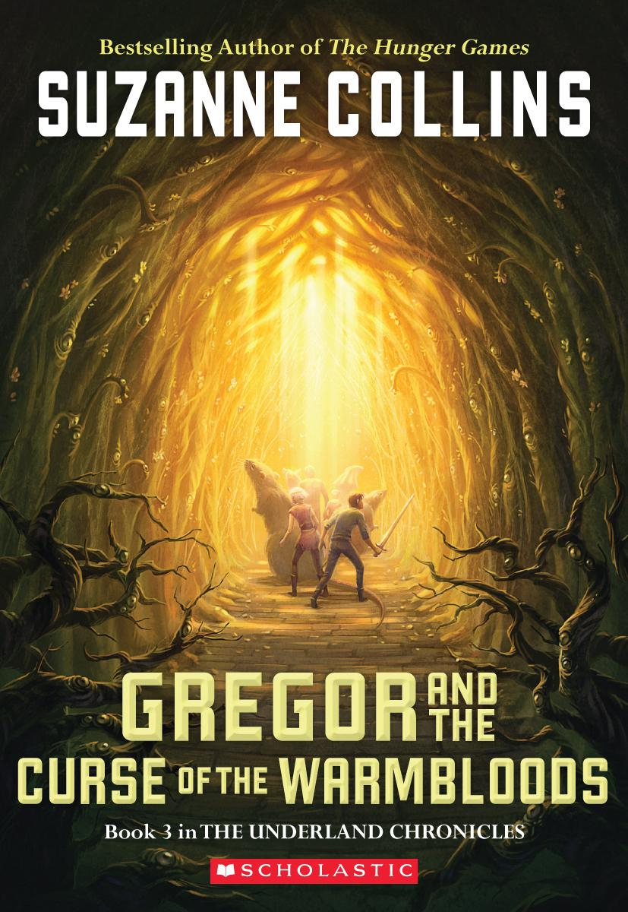

In a dystopian future, the totalitarian nation of Panem is divided into 12 districts and the Capitol.
Each year two young representatives from each district are selected by lottery to participate in The
Hunger Games. The 24 participants are forced to eliminate their competitors while the citizens of
Panem are required to watch. When 16-year-old Katniss' young sister, Prim, is selected as District
12's female representative, Katniss volunteers to take her place.
Catching Fire...
Twelve months after winning the 74th Hunger Games, Katniss Everdeen and her partner Peeta Mellark must go
on what is known as the Victor's Tour, but before leaving, Katniss is visited by President Snow who fears
that Katniss defied him a year ago during the games when she chose to die with Peeta. With both Katniss
and Peeta declared the winners, it is fueling a possible uprising. He tells Katniss that she mUst put out
the flames or else everyone she cares about will be in danger.
Mocking Jay...
The Hunger Games saga continues in this sequel that finds Katniss Everdeen faced with a decision that could
sway the fate of a nation. In the wake of the Quarter Quell, the Hunger Games have been changed forever, and
Katniss ends up in District 13. Her courage having inspired a nation, the brave young heroine heeds the advice
of her friends, and sets out to save Peeta. Meanwhile, Katniss' fragile alliance with President Coin could lead to disaster..
The Underland Chronicles!


Gregor the Overlander...
A preteen boy named Gregor and his younger sister Boots are in the laundry room of
their apartment when Boots falls through a grate. Gregor follows. They find themselves
in a world where insects and rodents are as big as humans. They discover that there
are also humans in this strange world when they are brought to the city Regalia by
cochroaches.
Gregor and the Prophecy of Bane...
Months have passed since Gregor first fell into the strange Underland beneath New York
City, and he swears he will never go back. But he is destined to be a key player in
another prophecy, this one about an ominous white rat called the Bane.
Gregor and the Curse of the Warmbloods...
For the third time, Gregor and his stolid little sister Boots descend to the Underland in
fulfillment of a prophecy, in a story that delivers the breakneck adventure and strong
characters readers have come to expect.


Gregor and the Marks of Secret...
In the fourth book of the bestselling Underland Chronicles, Gregor is drawn ever deeper
into a brewing crisis. For generations, rats have run the mice out of whatever lands they've
claimed, keeping them constantly on the move. But now the mice are disappearing and the young
queen Luxa is determined to find out why.
Gregor and the Code of Claw...
The final prophecy, “The Prophecy of Time,” doesn’t mince words. It says the Warrior will be
killed. As an army of rats gathers around Regalia, and more of Gregor’s family joins him in
the Underland, Gregor must gather his courage to defend this strange land and face his future.
Time is running out for the Underlanders and for Gregor.
 


